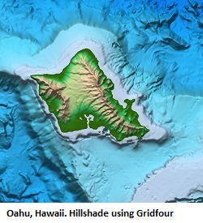

The Gridfour Software Project
Tools for raster data including scientific and geophysical applications.
Background
Although there are many tools for image processing and gridded-data applications, the Gridfour Project believes that there is still a need for general-purpose software utilities for the processing of raster (grid) products. Potential applications in these areas run the gamut from rendering, data compression, contouring, surface analysis, and other operations aimed at analyzing and understanding data stored in raster form.
Our Inspiration
Recently, there has been a lot of news about the Seabed 2030 Project . That ambitious undertaking aims to map 100 percent of the ocean floor by 2030. To put that in perspective, the project organizers estimate that, today, only about 20 percent of the world's oceans are fully mapped (see Seabed 2030, FAQ). So there's a lot of work to be done in the next decade.
One thing is certain, the existence of projects like Seabed 2030 will result in massive collections of grid-based (raster) data sets. Seabed 2030 itself will include about 7.6 billion grid points [1]. There is a need for software libraries that can assist in the processing of that data. In particular, we see a need for more efficient techniques for storage and data compression for grid data. That need inspired us to create Gridfour.
An Old Idea Made New
The first module created for the Gridfour Software Project is the Gridfour Virtual Raster System (GVRS). GVRS is a grid-based data compression and file management module. The GVRS API helps Java applications manage raster (grid) data in situations where the size of the data exceeds what could reasonably be kept in memory. It also provides a file-based utility for the persistent storage of data between runs. And, finally, it includes custom data compression that significantly reduces the storage size required for raster data.
Some of the data-compression algorithms used in GVRS have been around for a long time They were originally developed for a project named Gem93 that was completed in 1993. Gem93 included a number of tools for working with raster data, among them a lossless data compression technique inspired by the work of Kidner and Smith (1992). You can read more about them at our project documentation Lossless Raster Compression Algorithms.
Of course, the state of the art has advanced quite a bit since 1993. And although the foundation for GVRS comes from old ideas, we hope you find that our API provides a fresh take on their implementation. We intend our GVRS library to provide a convenient tool for investigators developing new techniques for compressing geophysical and scientific data in raster form. GVRS makes it very easy to extend the Gridfour code and add new data compression capabilities ( to see just how easy it is, visit our wiki page at Custom Data Compressors ). Our hope is that by providing GVRS, we will help investigators focus on their own research and leave the details of memory and file-management to the Gridfour API.
Help Wanted
We are finishing up the initial implementation of GVRS. We are looking for developers interested in porting it to additional languages (such as C#, C++, Rust) and creating Python bindings. We are also looking for users with ideas for new features and how to apply the library.
Things to Come
The Gridfour Software Project is still in its infancy. There is a lot of opportunity for new ideas and new software development. In the future we hope to include implementations of contouring, statistical analysis, and physical modeling logic to our collection. We are also building tools to simplify access to data from the Shuttle Radar Topography Mission ( SRTM ) and the U.S. Geological Survey's high-resolution National Elevation Dataset ( NED ).
In the meantime, you are welcome to visit our companion Tinfour Software Project at https://github.com/gwlucastrig/Tinfour
Finally, we end with a picture that was created using the Gridfour API and a set of elevation and bathymetry data taken from the GEBCO_2019 global data set. The picture shows a shaded-relief rendering of the Island of Hokkaido, Japan. GEBCO_2019 was one of the data sets used for the initial GVRS implementation and a good example of the potential of systems like it. Color-coding was based on elevation obtained from a GVRS file and shading was computed using the surface normal obtained with Gridfour's B-Spline raster interpolation class. The GVRS data compression reduces the size of this data set down to about 17.2 percent of its original size (see GVRS Performance for more details). Future work may bring about more improvements.

Project Links
The Gridfour Code Repository on Github -- Our main project space and code repository
The Gridfour User Notes -- A collection of articles describing the algorithms used in Gridfour, the results of performance tests, and helpful how-to articles.
References
General Bathymetric Chart of the Oceans [GEBCO], 2019. GEBCO Gridded Bathymetry Data. Accessed December 2019 from https://www.gebco.net/data_and_products/gridded_bathymetry_data/
Kidner, D.B. and Smith, D.H. (1992). Compression of digital elevation models by Huffman coding, Computers and Geosciences, 18(8), 1013-1034.
National Oceanographic and Atmospheric Administration [NOAA], 2019. ETOPO1 Global Relief Model. Accessed December 2019 from https://www.ngdc.noaa.gov/mgg/global/
Notes
[1]Point count estimated using survey-resolution table given in Seabed 2030, FAQ.